Pictures¶
There are several pictures to visualize the oscillations of neutrinos.
Magnetic Spin¶

Image source: Larmor Precession .
Recall that torque of a magnetic spin in a magnetic field is calculated as
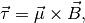
while torque is by definition 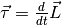. So we have, for such a system, the equation of motion is
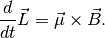
In the case of electron quantum magnetic spin, 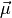 is proportional to the angular momentum 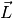, i.e., 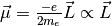.
So the equation of motion becomes
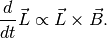
Equation of Motion for Neutrino Flavor Polarization Vector
That EoM is
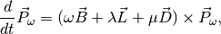
where the quantities can be found in Duan, H., Fuller, G. & Qian, Y.-Z. Collective Neutrino Oscillations. Annu. Rev. Nucl. Part. Sci. 60, 569–594 (2010).
Now it is clear that the two system has very similar EoM.
Neutrino Flavour Isospin¶
Neutrino flavour isospin [3]

where
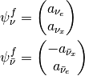
The equation of motion for isospin is
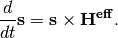
Previously we have already seen the equations for a spinning top,
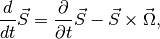
where 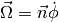. Consider conservation of momentum, we have
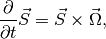
which is similar to the neutrino isospin equation of motion. 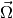 corresponds to 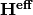.
Coupled Pendulum¶

The equation of motion is
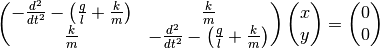
Using Fourier transform, we will get the solutions,
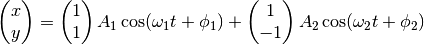
Recall that the state of neutrino after time  is
is
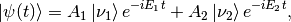
where 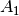 and 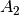 are determined by initial condition. The real part of this, is exactly the same as the solution to coupled pendulum, where the physics is the transfer from one eigenstate to another.
Gyroscope or Spinning Top Picture¶
A Classical Top¶
The key concept of a classical gyroscope is the balance between gravity and angular momentum conservation, i.e., angular conservation in specific directions.
Angular momentum for a 3D rigid body with a axial symmetry in a 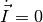 frame is
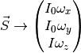
The gyroscope should obey Euler’s equations with extra Coriolis terms since we have decided to work in a rotation frame (), [1]
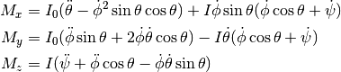
with the torque for a top being
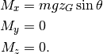
Note
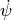 is the spin of the top itself. More generally, the Euler equation is

Steady Precession¶
A steady precession maintains the angle  .
.

Now we have 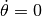 so the Euler’s equations reduces to,
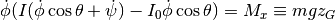
For a steady state usually we can use this approximation 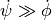.
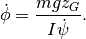
Now define 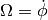 and 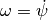. Our approximation becomes 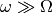.
Unsteady Precession¶

Polarization Vector¶
Polarization (for a two state system) is the difference of the probabilities of finding the system in the two difference normal states (spin up and spin down for example).
Density Matrix¶
For a two-state system, an example of density matrix is
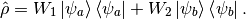
When 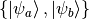 basis is chosen, density matrix can be written as a matrix,
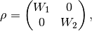
in which the two constants are the probability to find the system in each states respectively and they are called the population.
Rewrite the density matrix with Pauli matrices and identity,
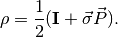
Note
The reason we have a 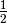 is that by definition polarization vector is
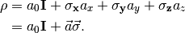
However, trace of density matrix should be 1, which means 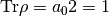 and we can find 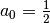 noting that 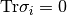.
The important fact is that the values of polarization depends on the choice of basis.
More physical meanings can be obtained by chosing a good basis so that the density matrix is diagonalised by expressing it with components of polarization. [4]
Polarization, as the name indicates, should equal to
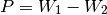
when it is aligned with z direction of Pauli matrices. Polarization vector is not a vector in real space but a vector of an imagined space.
Take Out The Components
How to project out the components of polarization vector? By multiplying on both sides the Pauli matrices.
Note that for Pauli matrices
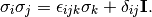
Multiplying by  on both sides of 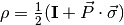, we get
on both sides of 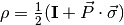, we get

Apply the sigma algebra we discussed there, the result of this is
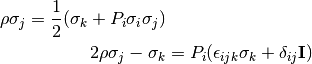
We know that the trace of any Pauli matrix is zero. Take the trace of the equation,
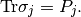
All done.